My self-care app, HerFreedom101, attracted an initial group of users, but many did not continue checking in after onboarding. The first experience introduced several features, yet it did not establish what users should return for or show how one visit would improve the next.
After completing a check-in, users returned to a dashboard of separate features and had to decide what to do next. The streak system encouraged daily attendance, but it measured consistency rather than whether the experience was useful. A user could return simply to protect her streak. For a product intended to support recovery, this risked turning self-care into another obligation to maintain.
How could HerFreedom101 turn the check-in into a useful daily experience and give users a meaningful reason to return?
What made this hard
The hardest part was not choosing which features to add, it was combining the ones already there, such as check-ins, rituals, reflection and Chi (her personal companion), into something that felt personalised and made sense to the user, rather than a random collection she had to figure out for herself. That combination also had to hold together consistently as her needs changed, not just for someone still catching her breath but for someone further along in rebuilding too. Separate features and a daily streak encouraged attendance without ensuring value. With only thirteen early users, I also had to distinguish directional evidence from claims about retention.
The solution and impact
I brought the separate features into one daily journey. The check-in no longer ends with a result and leaves the user to choose what to do next. Her answers are used to create a specific plan for that day, bringing the most relevant activity into one place. She can swap out anything that does not resonate and complete the plan in any order, so the structure gives her a starting point without taking away her choice. As she completes each action, the journey updates to show what she has done and what she can do next.
Before · Feature dashboard
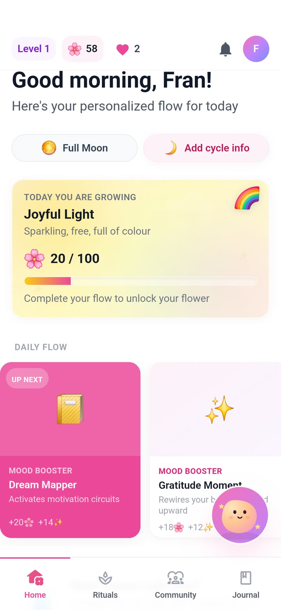
Separate mood-booster activities competed for attention, each with its own reward, leaving users to decide where to start.After · Adaptive daily journey
The check-in now creates a relevant sequence of actions and a clear next step.
I also demoted the daily streak so it no longer defined progress. Personal progress now only moves forward. If a user returns after several days away, she continues from where she stopped. Chi, the app's conversational wellbeing guide, can refer back to details and reflections the user has shared. Chapters then collect completed days and patterns noticed over time into a longer-term view of her progress.
01
Adapt
The check-in creates a plan that matches what she can manage that day.
02
Remember
Chi uses what she has shared to make later guidance more relevant.
03
Keep progress
She continues from where she stopped, even after time away.
The redesign turned HerFreedom101 from a collection of separate wellness features into one connected product system. Check-ins now decide which support appears next, completed activities inform later guidance and progress is kept when the user takes time away. This gives every feature a clearer role in helping the user return instead of asking her to navigate the same menu on every visit.
SHIPPED, NOW BEING VALIDATED
The connected journey is live. Testing with family and friends so far has surfaced consistent, positive feedback about Chi, particularly her gentleness and how much she helps lift daily mood. The group is still too small to claim a retention improvement, so the next test is whether this stronger continuity gives more women a meaningful reason to return, while I start getting the app in front of more people and work through small UI improvements in the meantime.
What I learned
I’ll never mistake a warm collection of features for a coherent product loop. At its core, this comes down to one of the oldest rules in the book: don’t make me think. The first MVP asked depleted users to choose among rituals, reflection, Chi and other tools, then rewarded them for protecting a streak rather than getting value. I also will not turn thirteen users into a retention claim: they exposed the broken loop, but they did not prove the redesign fixed it.
I also learned to weigh impact against effort rather than chase whatever feature sounded interesting to build, and to validate in small batches before investing real development time. Usage in the admin dashboard I built with Claude showed limited engagement with several features. My own use added context: I was also leaving features unused and sometimes opening the app just to protect my streak. Together with discovery conversations, these signals helped me prioritise the redesign. I had borrowed that streak from apps like Duolingo without testing it strictly enough against my personas, a reminder that a feature that works in one product may not suit the people I am designing for.
How I designed and evolved an adaptive wellness product for women experiencing burnout, creating a model of progress that responds to changing capacity without relying on pressure or punishment.
A wellness product should not become another demand
HerFreedom101 began with a gap I noticed while recovering from burnout. I could not find a product that felt specifically designed around women's experiences of burnout and recovery. Broader wellness apps such as Headspace and Quabble offered large catalogues of activities, which still left me deciding what to choose when I had very little energy. Finch made self-care feel more approachable, but its playful style felt too young for the kind of support I wanted.
This revealed the contradiction I wanted to solve: the products available to me still required choice, motivation or consistency at the point when those resources were hardest to access. Early discovery conversations helped me explore other women's experiences of burnout and self-care before developing the first version of the app.
How could HerFreedom101 turn the check-in into a useful daily experience and give users a meaningful reason to return?
I led product strategy, discovery, information architecture, interaction design, UX writing, prototyping, full-stack implementation, monetisation, safety, launch and post-launch product analysis.
The process
Step #1: Turning lived experience into a product question
My experience provided a strong starting point, but it did not give me permission to assume every woman experienced burnout in the same way. I separated my personal frustration from the broader behaviour I needed to investigate.
INITIAL OBSERVATIONPeople want to care for themselves
The desire is present, but the energy required to sustain a routine may not be.
→
REFRAMED PROBLEMCapacity is the design constraint
The product must work before motivation, consistency and decision-making return.
Step #2: Listening beyond my own experience
Before developing the first version of HerFreedom101, I held informal discovery conversations with four women from my family and friendship network who had experienced burnout or prolonged periods of low capacity. These conversations explored their experiences of burnout and self-care, what they had tried and what they wanted from support.
This was early, directional discovery to inform the initial app. The conversations highlighted how hard it could be to make time for self-care, and how support needed to account for feeling different from one day to the next.
Participant names have been changed for confidentiality. The notes below are a synthesis, not direct quotations.
ParticipantWhat made self-care harderWhat she neededInitial design direction
LaylaChoosing what to do for herself felt like more effort when energy was lowA simple, manageable place to beginShort, easy-to-start rituals
FranWanted to make time for self-care but struggled to fit it into her dayA simple structure to help make self-care a regular part of her dayGive self-care a place in the day with a flexible daily structure
AmeliaHow she felt changed each day, so general wellness advice did not always fitSupport that took her emotions that day into accountA daily check-in to guide relevant support
KimWanted to see how her mood changed over time and whether she was feeling betterA way to look back on her mood and recognise patterns or improvementsA visual check-in history to track mood over time
KEY MOVE
The initial concept was to make self-care easier to fit into everyday life: short rituals that could be done anytime, anywhere, with support that reflected how a woman felt that day, whether she was struggling or feeling fine.
Step #3: Defining the product hypothesis
After those conversations, and before I started designing, I created three personas to keep me honest about who I was designing for. I returned to them throughout the project whenever a decision needed checking. Aisha, the burned-out professional, was the most important.
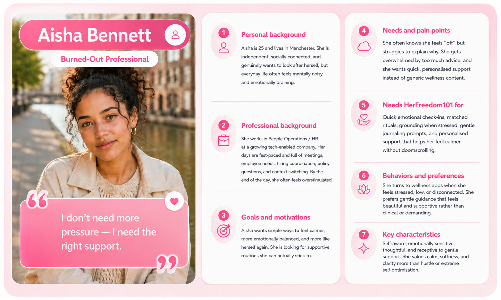
Aisha, the primary persona: a burned-out professional who does not need more pressure, she needs the right support.
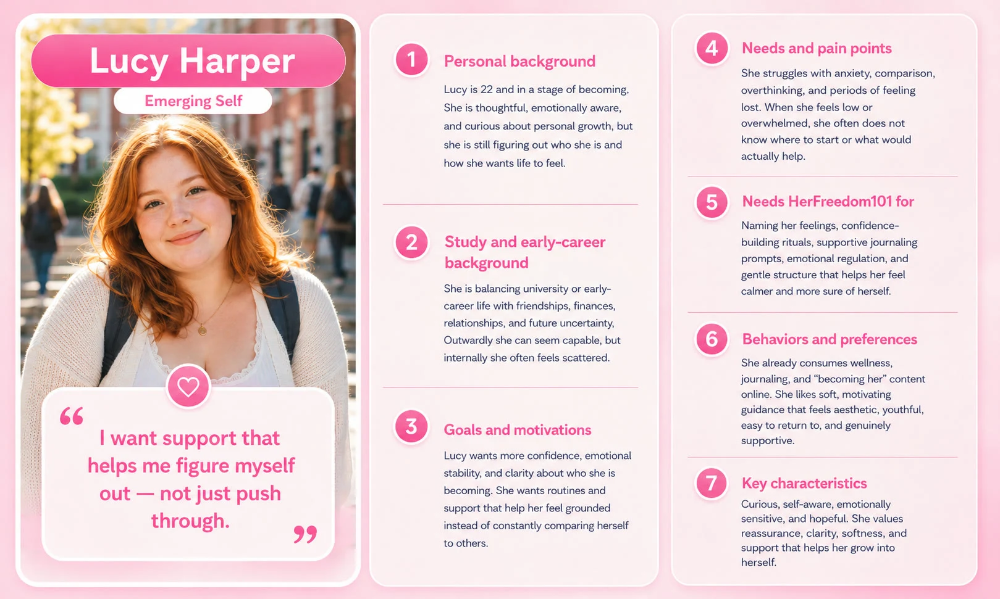
Lucy, still figuring out who she is and wanting support that helps her understand herself.
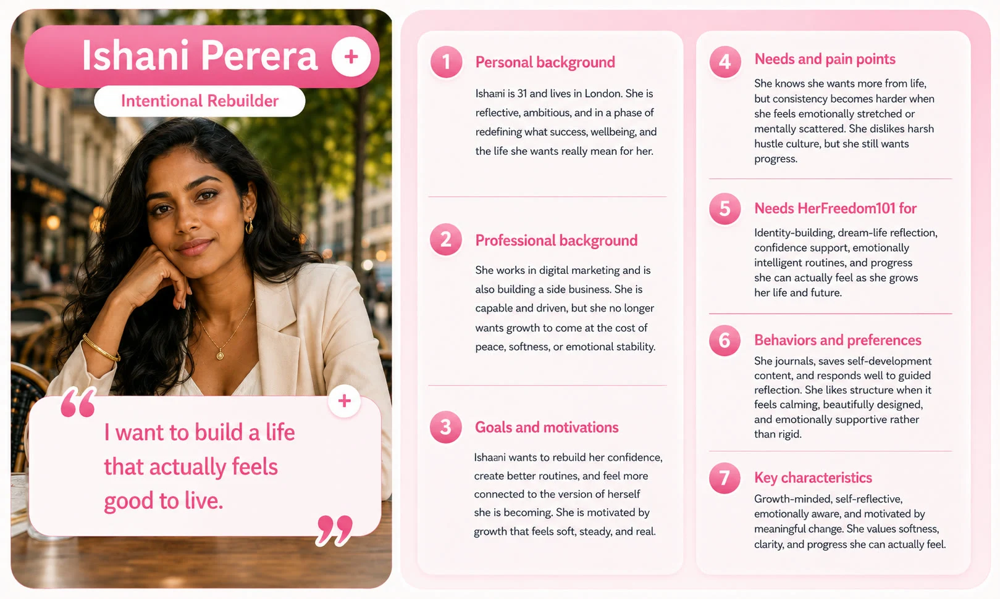
Ishani, rebuilding with intention and wanting growth that feels soft and steady.
Together, the conversations and the personas shaped my product hypothesis. What if self-care could fit into the time a woman had and respond to how she felt that day?
01
Keep it manageable
Offer short, easy-to-start rituals that fit into a busy day.
02
Reflect daily emotions
Use a check-in to understand how she feels, with room for good days as well as difficult ones.
03
Make it flexible
Let her practise self-care anytime, anywhere, around her own commitments.
I began by reviewing existing self-care apps such as Fabulous, Headspace and Calm, then explored what the HerFreedom101 dashboard could hold. I tried every idea I wanted to include, and as the screens filled up they began to feel overwhelming. That was when I started scaling the concept back.
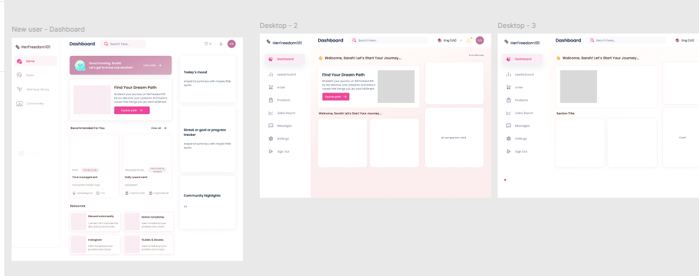
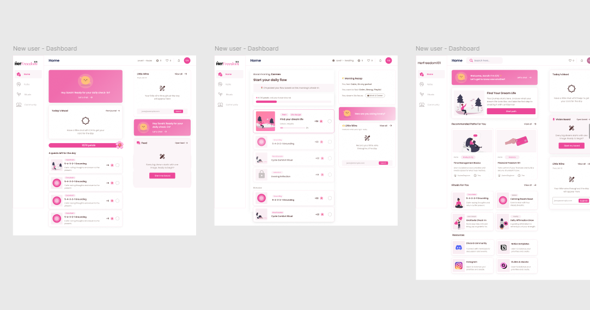
Early dashboard explorations. Most were designed for desktop. Looking back, I would start mobile first, because that is where she would use it.
Step #4: Building, launching and recruiting early users
I designed and developed the first version myself using Claude Code as part of an AI-assisted, vibe-coding workflow. I moved between product design and implementation, worked through technical constraints as they appeared, deployed the backend and application services on Google Cloud Platform, and prepared the app for release through Google Play. HerFreedom101 is now available on both Google Play and the App Store.
I launched on Android first so I could test the product with a smaller group, learn from real use and validate the direction before investing in an iOS release. I shared the Android app with the four women involved in discovery and in relevant women's self-care communities on Reddit, inviting people to try the experience rather than respond only to a prototype.
The first release included emotional check-ins, personalised rituals, cycle-aware guidance, letters, reflection, community, gamification, subscriptions and Chi, the app's conversational wellbeing guide. Building the full product proved the idea could be shipped, but it also exposed a contradiction: an app for women experiencing decision fatigue had become another menu of features to navigate.
The shipped Android version combined check-ins, progress counters and several feature destinations, shown here in a full walkthrough.
Step #5: Confronting what the evidence showed
The early group was small, so I treated the usage data as an indication of where to investigate further, not as proof of retention. I built an admin dashboard with Claude to review how people used the app. Usage from thirteen early users showed limited engagement with several features and helped me identify where to investigate further. Cycle Sync had the clearest secondary-feature signal, while seven of 72 rituals accounted for every recorded completion. Eleven letters had been sent, and community activity showed celebration without sustained discussion.
Using the product myself revealed another problem. I maintained a 26-day streak and even spent in-product currency to protect it, but I had stopped using the app for its actual wellbeing support. I was returning to preserve the number, not because the experience was helping me. The streak could motivate a visit, but for the wrong reason: it turned self-care into another obligation and made losing progress feel more important than gaining value.
KEY MOVE
I stopped treating more reminders, rewards or activities as the answer. The redesign needed to make the existing features work together: use today's check-in to offer relevant support, carry useful information into the next visit and let progress continue without demanding daily attendance.
Step #6: Redefining what progress meant
I removed the rule that progress depended on opening the app every day. A user now advances by completing a day in her personal journey. If she takes a week away, she returns to the same point and continues. Her previous effort is not erased and there is no broken streak to repair.
DAILY STREAKReturn every calendar day
Missing a day breaks the sequence and can make self-care feel like another obligation.
→
PERSONAL PROGRESSContinue when you are ready
Time away changes nothing. The next completed day moves the journey forward.
The path waits. She does not fall behind.
System rule: shared community activity can still follow calendar dates, but personal progress only moves when the user participates.
Step #7: Giving users a reason to return beyond a streak
Demoting the daily streak raised a more important design question: if users were no longer returning to protect a number, what would make opening the app useful today?
In the first version, the check-in produced a result and then returned the user to a dashboard of features. She still had to decide whether to choose a ritual, write a reflection, speak to Chi or do nothing. I redesigned the check-in as the starting point for the whole day. The user shares how she feels, how much energy she has and what she wants support with. If she has enabled cycle tracking, that context and her recent activity can also inform the response.
The app then brings a small, relevant sequence into one place instead of asking her to browse the full product. A low-energy day might begin with a gentler action, while a day with more capacity can offer something more involved. Nothing in that sequence is fixed: she can swap out any activity that does not resonate for another, and complete the rest in whatever order suits her, so the plan gives structure without dictating it. As she completes an activity, the daily view updates so she can see what she has done and what is available next.
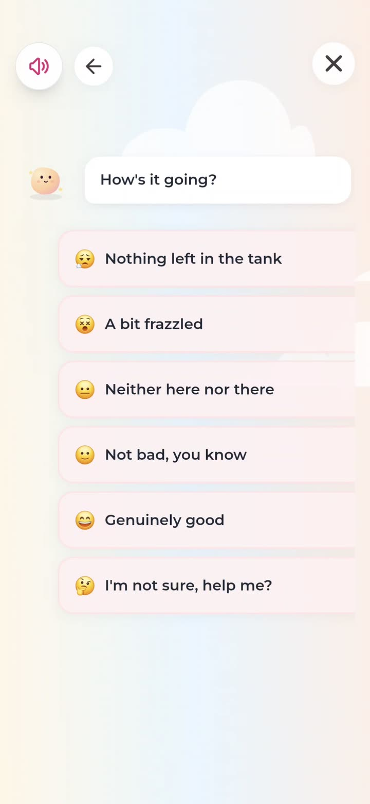
She says how she is, in her own words rather than a score.
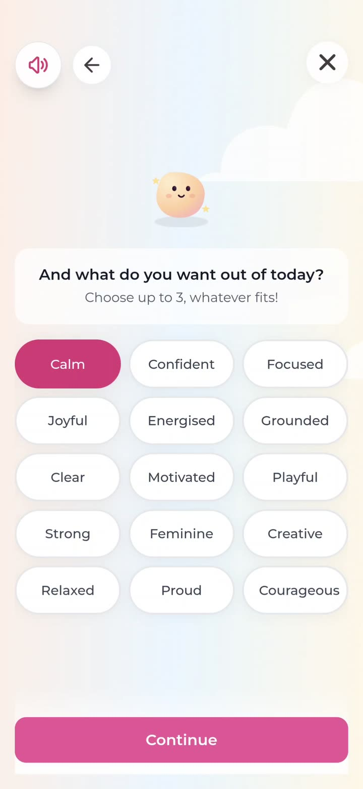
She names what she wants from the day, up to three.
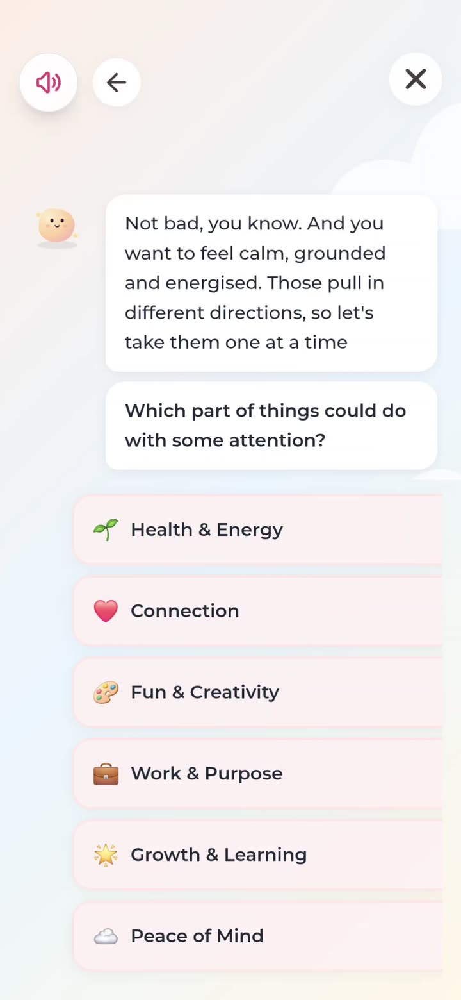
Chi reads the answers back and asks where to focus.
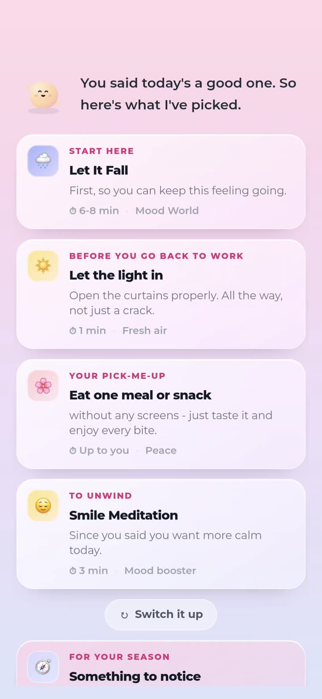
The check-in ends in a specific plan, not a result and a menu. Each item says why it is there and how long it takes.
The plan becomes the day, with the check-in already marked done.
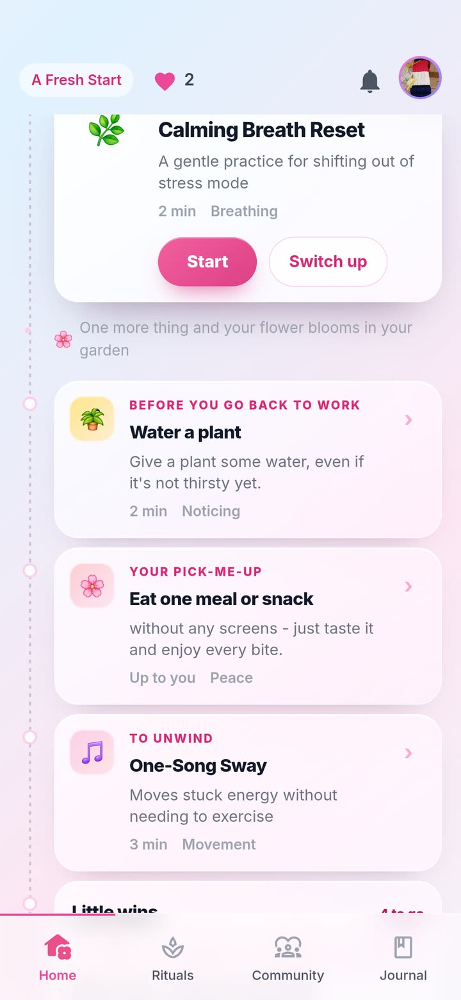
Completed actions stay visible, so progress is legible without a streak.
Step #8: Making one day improve the next
A relevant plan for today was only part of the answer. If every check-in started from zero, the user would keep giving information without seeing why it mattered.
I took inspiration from Google Health, which turns personal metrics into timely insights. What made it useful was not the data collected but the guidance it returned, which made me feel recognised and clear on what to do next. I applied the same principle to Chi, HerFreedom101's conversational wellbeing guide. She remembers details from the user's life, refers back to what she has shared, connects an evening reflection to the following morning and explains why particular support is suggested. This makes Chi the visible, human-facing part of the personalisation system, not a separate chat feature.
Chi also needed to feel present for longer than the moment of a check-in. I kept her visible from the first question of the day through to the actions that follow, so she reads as a constant, stable presence rather than a screen the user visits and leaves. Chi can also share a thought or invite a response, and users can give her gifts using petals earned through activities. Giving back is entirely optional. I wanted users to be able to express care as well as receive it.
My mum, who regularly uses the app, described this as making the relationship feel more equal and said seeing Chi light up in response to gifts made her feel good.
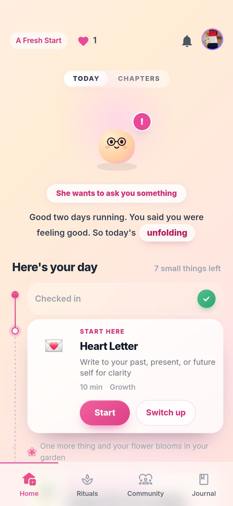
The home screen can surface a moment for Chi, not only for the user, so checking in becomes a two-way habit.
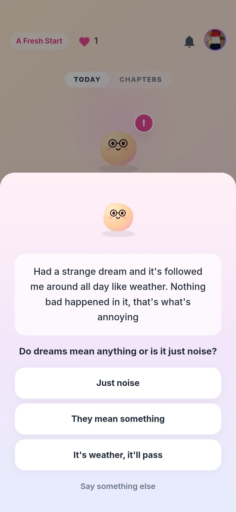
Chi shares something of her own here, a dream she cannot place, and asks what the user thinks.
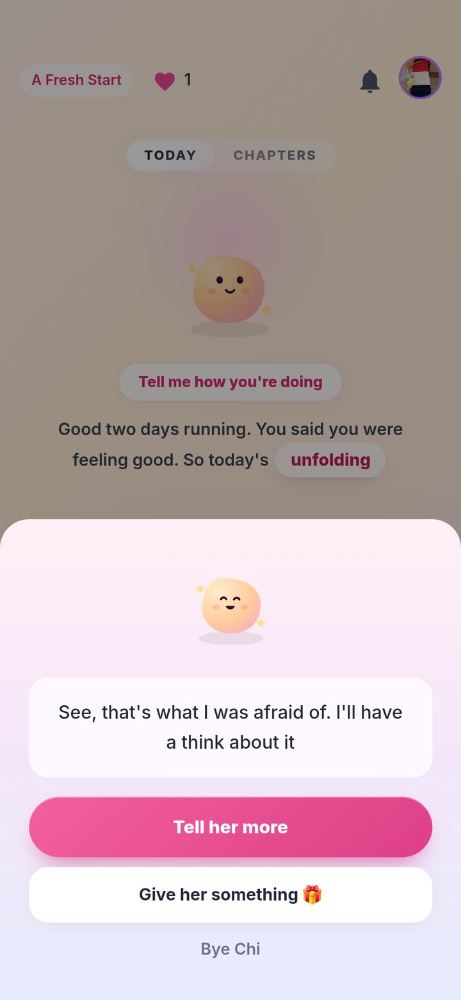
Users can choose to respond to Chi or offer a gift; participation is optional.
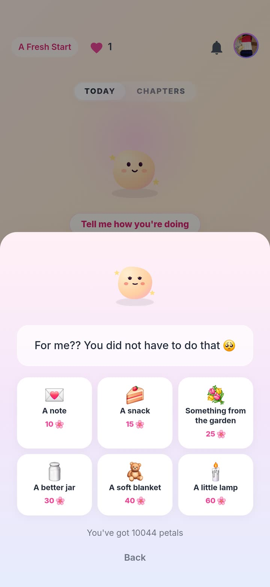
Petals earned through the day's actions can be spent on Chi as easily as on herself.
DESIGN PRINCIPLE
If the product asks the user to share something personal, that information should improve the support she receives later. Otherwise, the question creates effort without returning value.
Step #9: Supporting recovery beyond the hardest days
Once the product could adapt from one day to the next, I needed to consider how the user's capacity changed over a longer period. The first version was designed mainly for someone who felt depleted, and speaking to her only as a person in burnout would become less relevant as she recovered. I noticed this in my own use: as I moved out of burnout, the product needed to keep pace with me and support whatever came next, whether rebuilding, growing or discovering a different phase of life, not treat every day as one to survive.
I created three internal stages: depleted, reconnecting and rebuilding. These are not shown to the user and are not only for burnout. They help the system adjust its support, from reducing effort during depleted periods to encouraging more active growth once capacity returns, whatever brought her to that point.
Chapters make that longer-term change visible without becoming another streak. Each brings together its focus, the days completed and patterns Chi has noticed, giving the user a record of how her needs and capacity are changing. This lets HerFreedom101 support the person she is becoming, not keep defining her by the reason she arrived.
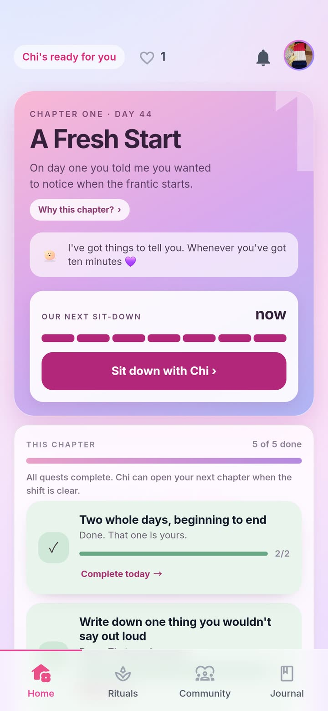
Chapters turn completed days and noticed patterns into a longer-term story of recovery and growth. I am not fully happy with this design yet. I prioritised getting the functionality working and plan to refine it.
Step #10: Refocusing the product around meaningful return
The original product had grown broad because each idea was considered separately. The new model gave me a clearer way to decide what belonged: every feature needed to help the experience adapt to the user, remember something useful or show progress without pressure.
I audited each major feature against the question, “Does this strengthen a meaningful reason to return?” The answer determined whether the feature should be protected, connected to the daily journey, simplified or paused.
ProtectCycle Sync
Keep the strongest secondary-feature signal and use it as context for relevant support.
ConnectCheck-ins, rituals, reflection and memory
Make them stages of one daily journey instead of separate destinations.
ConsolidateSelf-knowledge into Chapters
Return what the system has learned as one coherent view over time.
SimplifyChi entry points
Make Chi part of the journey instead of asking users to understand separate chat modes.
PauseCommunity expansion
Do not invest further while the early audience is too small to sustain discussion.
DemoteStreaks
Allow them to acknowledge participation, but not define whether progress has been kept or lost.
I stopped asking, “What else could I design?” and began asking, “What has earned the right to remain?”
This closed the loop with the original problem. Instead of offering more features for a depleted user to choose between, the product could now decide what to bring forward, remember why it mattered and help her continue when she was ready.
Outcome
HerFreedom101 now has a clearer product model: check-ins have consequences, days connect, progress survives absence, memory becomes useful, Chapters support growth and the roadmap is judged by its contribution to a meaningful return.
VALIDATION STATUS
The redesigned system has shipped, but the cohort remains too small to claim a validated retention improvement. The next question is precise: does being remembered, and seeing progress accumulate without punishment, give women a stronger reason to return?
From design to shipped product
DELIVERY
I designed the experience and built the app with AI-assisted development using Claude Code. As founder and product manager, I also set the product direction, prioritised features and decided what to ship, moving between product decisions, interface details and implementation constraints. Because the experience handles personal wellbeing information, I also treated privacy, security and safe data handling as product requirements while deciding what was feasible to release. The goal was always a working product that could reach users.
What I learned
Warmth was not enough
Tone alone could not solve the deeper problem. The experience needed to remember what users shared, adapt to changing capacity and make progress visible without turning absence into failure.
The project changed how I approach unclear product problems. I now check whether features work together, not just whether each one is good on its own. I combine the small amount of usage data I have with what people tell me, question my own assumptions, and cut scope when adding more would not improve the core experience.
The admin dashboard I built with Claude showed limited engagement with several features. My own experience helped me understand that pattern: I was also leaving parts of the app unused and sometimes returning only to protect my streak. I considered these signals alongside discovery conversations to prioritise which features deserved further investment and how the existing ones could work together.
The streak also taught me something about borrowing. I had adopted it from popular apps like Duolingo, where it works well. But a feature succeeding in one product does not mean it suits another. I need to keep the context I am designing for in view and be stricter about checking decisions against my personas. Aisha's card said it plainly: she does not need more pressure, she needs the right support.
More features are not the answer if they do not work together. Sometimes recycling what you already have can be the solution.